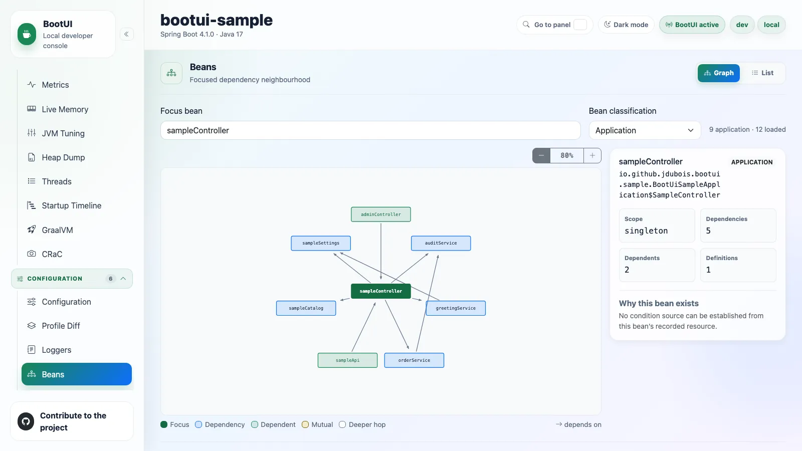
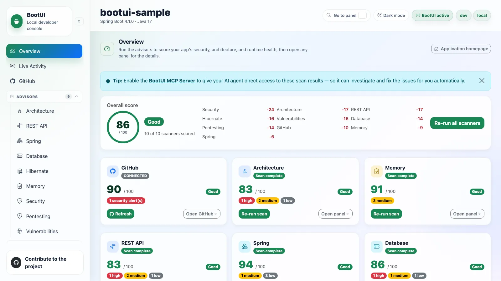
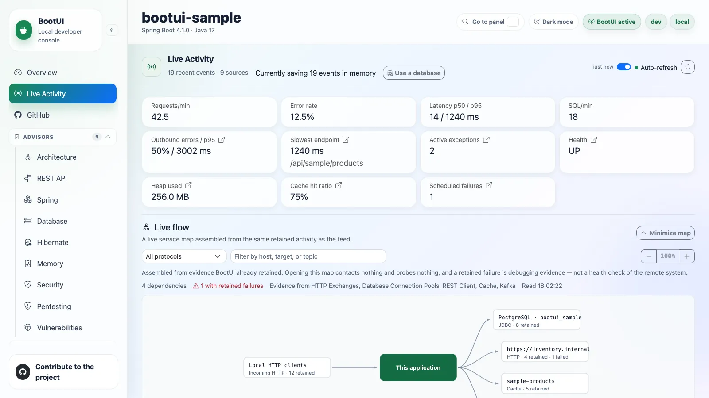
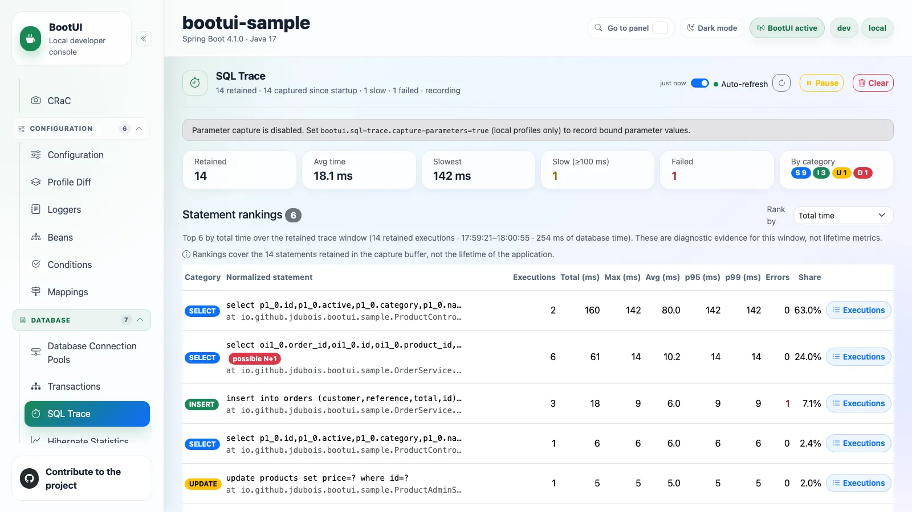
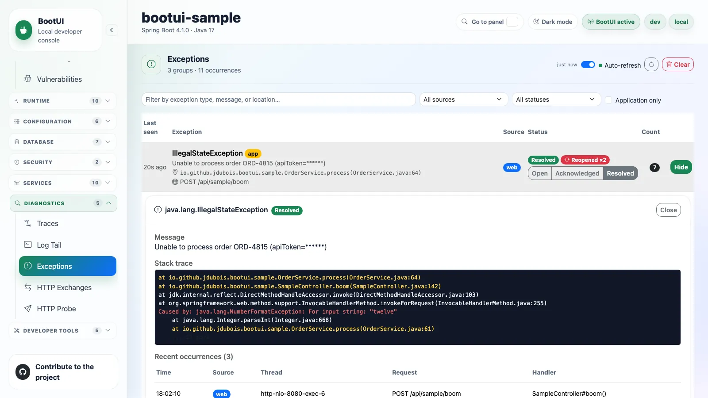

Developer console
Spring Boot 4 · Quarkus
Local-only · fail-closed
Introduction to
BootUI
Your app is a black box. BootUI turns the lights on.
An embedded developer console for Spring Boot 4 and Quarkus. One codebase, three stacks, 58 panels. 🔦
Julien Dubois · github.com/jdubois/boot-ui · julien-dubois.com
GitHub
Microsoft
👋 Who am I?

- Principal Manager, Developer Relations @ Microsoft / GitHub
- Creator of JHipster · 22,000+ ⭐
- 200+ international talks (Devoxx, SpringOne, MS Build…)
- Today: shipping real projects by managing fleets of AI agents
Part 01 · The problem
01
Why are Java applications opaque?
Spring Boot and Quarkus are missing a good developer console.
🕳️ Every answer lives in a different tool
The questions you actually ask
- What configuration is actually effective right now?
- Did that @Transactional method really commit — or quietly join someone else's transaction?
- Is this exception new, or has it been failing all week?
- Why was that request slow — and what SQL did it run?
What you do instead
- curl an Actuator endpoint, read raw JSON
- Attach jconsole / VisualVM for the JVM half
- Tail the logs in another terminal
- Grep the codebase to guess the wiring
Hosted dashboardsAnother service to run, for one local app
Admin serversOutside the app, shaped for production fleets
APMRight idea, wrong scale — and wrong loop
None of them live where the work happens: inside the inner loop, on localhost, for one running app.
🧰 What BootUI actually provides
One dependency. One local URL. Three ways to read your app.
🩺 Advisors
- 437 rules across 10 advisors — architecture, security, Hibernate, memory, dependencies
- Every finding names the cause and the fix
- One score out of 100, on demand — never on page load
📊 A live console
- 58 panels in 9 groups, in your browser
- Requests, SQL, transactions, exceptions and the JVM — as they happen
- Explains what it means first; raw JSON one click away
🤖 An MCP server
- The same data, ≈79 tools, for your coding agent
- Opt-in and loopback only — off until you turn it on
- Your agent stops guessing and reads the running app
Part 02 · The product
02
One console, three stacks
Spring MVC, Spring WebFlux and Quarkus — from a single codebase.
🖥️ Add a dependency. Open /bootui.
Spring Boot 4 — servlet or WebFlux
<dependency>
<groupId>com.julien-dubois.bootui</groupId>
<artifactId>bootui-spring-boot-starter</artifactId>
<version>1.15.0</version>
</dependency>
-reactive for WebFlux.
Quarkus
<dependency>
<groupId>com.julien-dubois.bootui</groupId>
<artifactId>bootui-quarkus</artifactId>
<version>1.15.0</version>
</dependency>
A real Quarkus extension — runtime + deployment.
Activates in devdev / local profiles, or devtools on the classpath
Serves two thingsThe console at /bootui, the JSON at /bootui/api/**
Dark in productionAmbiguous activation leaves it disabled
🧭 58 panels, 9 groups, one question each
58
panels across 9 groups
3
stacks · one codebase
1
Vue UI · one JSON contract
0
extra processes to run
OverviewIs my app healthy — and what did it just do?
AdvisorsWhat is wrong, and how do I fix it?
RuntimeHow is the JVM behaving right now?
ConfigurationWhat config and wiring is effective?
DatabaseWhat is my app doing to the database?
SecurityHow is access actually enforced?
ServicesWhat is my app talking to?
DiagnosticsWhy did that request fail?
Developer toolsWhat is my toolchain doing locally?
Every group…answers one question, not "here is some data"
🧱 How one codebase serves three stacks
Vue 3 single-page console — /bootui
One UI. It does not know which framework is underneath it.
▲ one JSON contract · /bootui/api/** ▲
Spring MVC
Reference stack
Spring WebFlux
Reactive adapter
Quarkus
Runtime + deployment
▲ thin, and native to their framework ▲
bootui-engine
All reusable behaviour and policy — capture, buffers, masking, advisors, scoring, MCP
bootui-core
Immutable DTO records. No Spring. No Quarkus. No JSON library.
The same records serialize byte-identically under Jackson 3 (Spring Boot 4) and
Jackson 2 (Quarkus) — which is why the UI never forks.
Where a stack genuinely cannot answer, the panel stays visible and says why — never an empty table that looks like "no traffic yet".
Where a stack genuinely cannot answer, the panel stays visible and says why — never an empty table that looks like "no traffic yet".
Part 03 · Inside
03
Capture honestly.
Three engineering signatures run through every panel that follows.
1 · Own the capture
No p6spy, no datasource-proxy, no HTTP proxy library. Framework SPIs and hand-written JDK proxies.
2 · Open on capture, closed on data
Can't instrument? Leave the app untouched. Can't answer? Report unavailable — never an empty table.
3 · Label your confidence
Tiered correlation everywhere, with explicit Unattributed and Ambiguous buckets.
We walk the console's own menu, top to bottom — Overview, Live Activity, Runtime, Configuration, Database,
Security, Services, Diagnostics. The ninth group, Developer tools, gets its
own part.
🩺 Advisors — findings with fixes, on demand
437 rules, written with AI
- Every rule is its own class with a stable id, a severity and a concrete recommendation — Hibernate alone has 75, Security 61, REST API 56
- Written with AI, then reviewed one rule at a time: the strongest models applied to framework expertise, not a generic linter
- No other console for Spring Boot or Quarkus carries a ruleset of this depth — it is unique to BootUI
- The result is insight you cannot get elsewhere: findings tied to your beans, queries and configuration, so you can actually improve the application
One score out of 100
- 9 severity-scored scanners, each starting at 100
- Fixed penalties: critical −25 · high −10 · medium −3 · low −1
- Overall = the mean of scanners that actually scored
80+ Good
50+ Needs attention
<50 At risk
Architecture 41REST API 56Spring 41
Quarkus 19Database 28Hibernate 75
Memory 36Security 61Pentesting 80 Vulnerabilities ∞
📡 Live Activity — and the per-request profiler
One feed, nine signals
RequestsSQLExceptions
SecurityEmailsScheduled
MessagingREST clientCache
- Signals nest under the request that caused them
- Slow rows tinted on a heat scale at 100 / 200 / 500 / 1000 ms
- An N+1 badge on the row itself — same rule the profiler uses, so the two never disagree
- Refreshes over Server-Sent Events, not a polling timer
Click a request → the drawer
Every correlation is labelled with how it was established:
Trace id exact Micrometer traceId, threaded from the MDC
Serving thread exact The one worker that served it
Time window approximate Method, path and window
- It degrades gracefully and never fabricates a correlation
🔬 Runtime — ten panels on the running JVM
Memory, threads, startup, metrics and native-image readiness — read in-process, without attaching a profiler.
What the group covers
- Live Memory and Threads — heap, pools, thread states and deadlock detection, live
- Heap Dump — capture and analyse locally, class histogram only, never object values
- Startup Timeline and Metrics — where the seconds went, and every Micrometer meter grouped by who registered it
- Health and HTTP Sessions — the full contributor tree; sessions masked by default
- GraalVM and CRaC — 27 and 17 curated readiness checks
🎚️ And one that prescribes: JVM Tuning
- Partitions a target process budget into heap, metaspace, code cache, direct memory, thread stacks and headroom — then hands you copyable flags
- Bare metal: fixed -Xms / -Xmx, keeping your collector
- Kubernetes: equal request and limit, with MaxRAMPercentage in JAVA_TOOL_OPTIONS
- Labels Pod QoS Depends on CPU instead of claiming Guaranteed it can't verify
⚙️ Configuration — what is actually effective
Read the truth, not the file
- Every effective property with its source, metadata description and default — and its value already masked
- Profile Diff: exactly what changes between two local profiles
- Conditions: positive, negative and unconditional matches — why an auto-configuration applied, or why it was skipped
- Beans and Mappings: the wiring and the HTTP surface, read from the running route table
Then change it — with the caveat attached
- Runtime overrides are persisted to .bootui/application-bootui.properties — a real file you can read and delete
- Every mutation shows its restart and rebinding caveat, because not every property re-binds live
- Big property, bean, condition and mapping tables page server-side, and filters run on the server — the browser never needs the full report
🗄️ SQL Trace — no proxy library, no guessing
Capture
- A hand-written JDBC tracer on the JDK's own dynamic proxies — BootUI bundles no database-proxy library
- Wrapping fails open: a DataSource that can't be proxied is left untouched rather than breaking startup
- Works in a GraalVM native image — the proxies are registered as native metadata
- Quarkus reaches parity with two feeders: an Agroal @Alternative plus a Hibernate StatementInspector, because ORM SQL bypasses the CDI DataSource
Read
- Rankings normalize literals and bind markers to ? and fold IN (…) — equivalent statements group without ever exposing a bound value
- Database time by request route — which endpoint is spending your database budget
- N+1 groups list the distinct call sites: class, method, line
- Unplaceable statements go to explicit Unattributed and Ambiguous buckets
🔄 Transactions — the boundaries nobody shows you
Captured by Spring's own SPI
- A TransactionExecutionListener (Spring Framework 6.1+) — BootUI's own wiring, not a third-party observability library
- It composes with, never replaces, your transaction management and your own listeners
- Managers that don't implement the SPI simply stay unobserved — nothing is monkey-patched to force it
What a boundary records
- A parent/child tree — nested calls sit under their root
- Propagation as NEW or PARTICIPATING — and it says plainly that Spring's SPI does not expose the declared @Transactional enum
- Isolation at begin, outcome (COMMITTED / ROLLED_BACK / UNKNOWN), thread, trace id
Fails closed with a clear reason when there's no PlatformTransactionManager, or on a WebFlux app using only R2DBC.
Honestly not applicable on Quarkus: Narayana and the CDI interceptor expose no comparable per-boundary hook.
🔐 Security — who can reach what, and who got refused
Spring Security — the chains, explained
- Filter chains and per-endpoint rule explanations, without exposing credentials
- Explain builds a stub request carrying only the path and method — never your headers, cookies, principal or session
- What it can't determine is marked best effort, not guessed
- WebFlux reads reactive SecurityWebFilterChain beans, non-blocking
- Quarkus has no filter chains: not applicable, and the advisor swaps in 49 Quarkus-native checks
Security Logs — who was refused, and when
- Authentication successes and failures, authorization denials — filtered by principal, type and time window
- Live over SSE: the browser re-fetches when the server signals a new audit event, instead of polling on a timer
- Bounded to 500 events, masked before rendering
- Quarkus is honestly partial: CDI security events carry no logout or session equivalent, and the panel says so
🔌 Support for all the main services your app uses
Scheduled TasksExecutions, not just declarations
REST ClientOutbound HTTP calls
Fault ToleranceBreakers, retries, bulkheads
WebSocketsSessions and frames
AI FrameworkSpring AI · LangChain4j
CacheHit ratios and tiering
EmailCaptured outgoing mail
KafkaProduced and consumed
RabbitMQPublishes and deliveries
JMSSpring messaging
Still no proxy libraries
- Spring's own RestClientCustomizer / RestTemplateCustomizer; on Quarkus, the MicroProfile RestClientListener SPI
- Email decorates JavaMailSender and records before delegating — pass-through by default
- A capture failure never disrupts the call itself
Distinctions that matter
- Failed (connection refused, timeout, DNS) is counted separately from Error responses (4xx/5xx) — most tools blur these
- chatty is flagged for any method: a looped POST costs as much as a looped GET
- Email's opt-in dev-trap is off by default, so BootUI never silently swallows your mail
🔭 OpenTelemetry — one pipeline, four panels
Tracing with zero configuration
- The starter contributes the tracing dependencies and the sampling default — you write no management.* properties
- Sampling is raised to 1.0 locally, so every request produces spans
- …and it pins io.opentelemetry / io.micrometer.tracing to INFO so a DEBUG root logger doesn't flood your console
- Self-traces are dropped whole: recognize one BootUI span, discard the entire trace
An OTLP receiver inside your app
- POST /bootui/api/otlp/v1/traces — cooperating local services export spans into your app's console
- Open a trace: a waterfall across services, with errors and parent/child spans
- On Quarkus: in-process SpanProcessor with quarkus-opentelemetry — same store, same panel
💥 Exceptions — triage, with regression detection
Grouped, not streamed
- A stable fingerprint from exception type + top frames collapses a recurring error into one row
- Two sources on Spring MVC: a non-intrusive HandlerExceptionResolver and a logback appender for scheduled, async and log.error(…, ex)
- A failure that is both handled and logged is de-duplicated by throwable identity — counted once
- Application frames highlighted; full cause chain with … N more folding
Sentry-style status, one click
| Open | Default for every new group |
| Acknowledged | Seen — keeps accumulating, never auto-transitions |
| Resolved | Believed fixed |
If a Resolved group throws again, it regresses: back to Open, and a lifetime
Reopened ×N counter appears on the badge.
- Bounded on purpose:
100groups,25occurrences each,50frames — the least-recently-seen group is evicted - Clear is an explicit action, and it honours the panel's read-only setting
Triage and regression live in the engine, so they behave identically on all three stacks — only capture sources differ.
WebFlux carries one documented gap: a controller's own @ExceptionHandler consumes the exception before any WebExceptionHandler sees it.
🎬 Demo — five minutes, four beats
The Spring sample app, running locally. Nothing pre-warmed, nothing pre-scanned.
1Understand an unfamiliar app in 90 seconds. Open /bootui — framework, version, active profiles, health. Then Beans and Conditions: what is wired, and why that auto-configuration was skipped.
2Run all scanners. Watch the score appear from nothing, then open one real finding and read its recommendation.
3Trigger a slow request with an N+1. Live Activity shows the row tinted and badged; click it to open the profiler drawer, and follow it into SQL Trace — down to the call site.
4Resolve an exception. Then throw it again. The group reopens with Reopened ×1.
🛟 The next five slides are screenshots of every beat — if the demo gods are unkind,
keep talking and keep moving.
Fallback · Beat 1
Understand an unfamiliar app — Beans, focused dependency neighbourhood

Focus a bean and see only its neighbourhood — dependencies, dependents, scope, and
why this bean exists. Not a 400-node hairball.
Fallback · Beat 2
Run all scanners — the score appears from nothing

86 / 100, and — the important part —
10 of 10 scanners scored. Before the run it says 0 of 10, never a fake zero.
Fallback · Beat 3a
Live Activity — nine signals, and a live service map

The map is assembled from evidence BootUI already retained — opening it
contacts nothing and probes nothing.
Fallback · Beat 3b
SQL Trace — the N+1, down to the call site

possible N+1 on a normalized statement — with
OrderService named as the call site, and not one bound parameter on screen.
Fallback · Beat 4
Exceptions — resolved, then thrown again

Resolved Reopened ×2 — the regression announces
itself. Note the message: apiToken=******, masked before it left the process.
Part 04 · The second user
04
Your agent reads the same panels.
An AI agent reading only your source code is guessing about the runtime.
🤖 The MCP server — opt-in, loopback, same DTOs
Point an agent at it
{
"servers": {
"bootui": {
"type": "http",
"url": "http://127.0.0.1:8080/bootui/api/mcp"
}
}
}
- Disabled by default. Flip it on in the panel for the life of the process
- No credentials needed on loopback — the panel shows the config, ready to copy
What it exposes
| 11 | advisor scans — the same button the panel runs |
| 11 | cached reports — read without re-scanning |
| 10 | diagnostics reads — activity, exceptions, SQL, traces |
| 33 | context reads — overview, health, config, beans, mappings… |
| 14 | bounded controls — clear, pause, resume |
Tools whose panel is absent are simply not advertised.
≈79 tools · one loopback endpoint
0 screenshots to interpret
🔁 The loop that closes
1Consult. The agent calls hibernate_scan against your running app and gets severity-ranked findings with remediation hints.
2Correlate. get_live_activity and get_exception_detail(id) tie a failure to the request, the SQL and the full stack trace behind it.
3Fix. It edits your source with runtime evidence instead of a guess about what the code probably does.
4Verify. It rescans. The finding is gone, or it isn't — and it can tell the difference.
Teach the agent first
# inspect it before you trust it
gh skill preview jdubois/boot-ui bootui
# then install for this project
gh skill install jdubois/boot-ui bootui
Why it works
- Source code says what should happen
- BootUI says what is happening
- The gap between those two is where your bug lives
📚 Learn more
Read
- julien-dubois.com/boot-ui — the documentation site
- /features — every panel, group by group
- /properties — the full configuration reference
Try
- /setup — Spring Boot and Quarkus in a few lines
- /try-sample-app — a running app, already wired up
- Or just add the dependency to a project you already have
Wire up your agent
- /ai-agents — the MCP server, end to end
- Works with Copilot, Claude Code and any MCP client
- Off by default — one property turns it on
Apache 2.0
Maven Central
Spring Boot 4 · Quarkus 3 LTS · Java 17
Go turn the lights on. 🔦
Add one dependency. Open /bootui. Ask your app a question.
🟢 BootUIObserves the app from the inside — julien-dubois.com/boot-ui
🔵 CoffilotBuilds, runs and scans it from the Copilot side panel
🟤 Dr JSkillGenerates the Spring Boot app to start from
🌐 julien-dubois.com · 𝕏 @juliendubois · 🐙 github.com/jdubois/boot-ui · 📚 julien-dubois.com/boot-ui